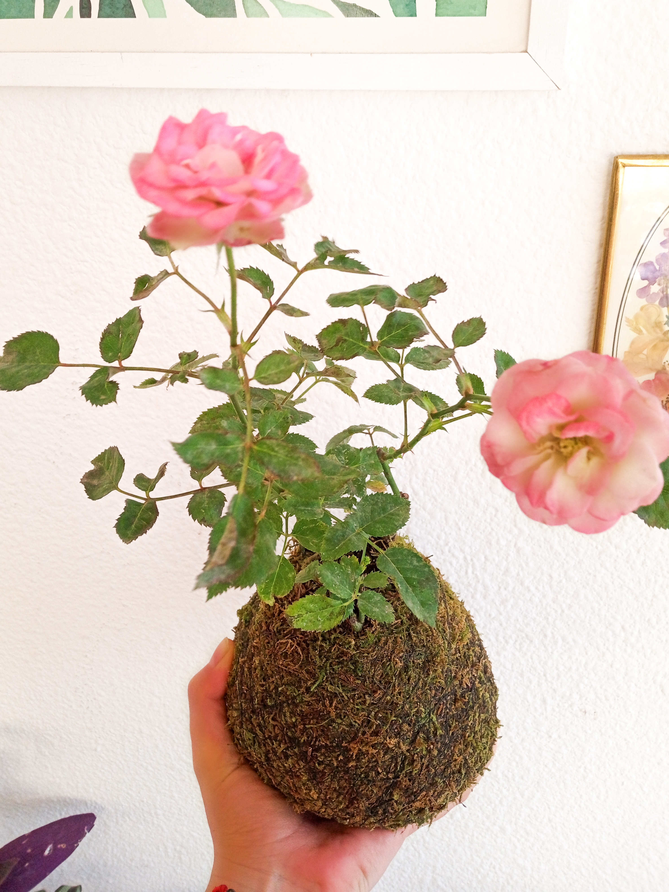
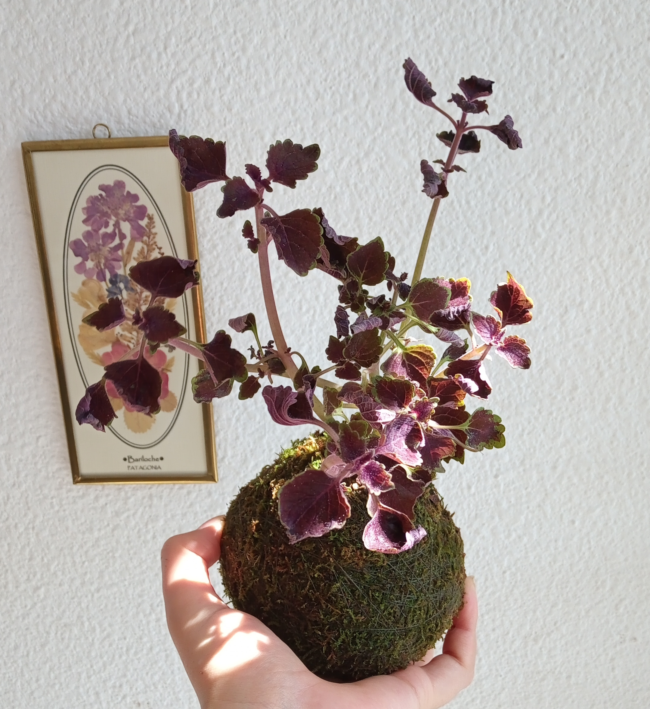
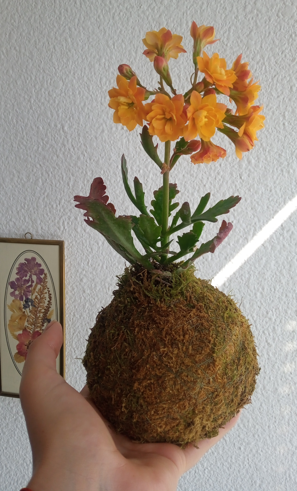

¿Qué es una Kokedama?
Un pequeño bosque en tus manos
Kokedama es el nombre de aquellas plantas que se cultivan dentro de una bola de musgo. El nombre y la técnica, tienen su origen en Japón. Esta técnica botánica es muy antigua y es una variante del bonsái surgió cuando la población más humilde comenzó a buscar formas sencillas de cultivar sus plantas favoritas, ya que las opciones son muchas, son fáciles de hacer y también de cuidar.
Algunos de los beneficios que el musgo aporta a las plantas son:
- • Evitamos usar tanto plástico, que contamina el planeta.
- • Contiene el sustrato sustituyendo a las macetas convencionales.
- • Retiene la humedad en el sustrato, disminuyendo la necesidad de riego.
- 🌿Ayudan a purificar el aire , tienen la capacidad.de reducir el estrés , pueden humedecer el espacio en que se hallen creando un efecto benéfico para la piel , absorben los contaminantes que se encuentran en el ambiente y disminuyen el ruido.
- 🌿Son una opción ideal para dar un toque natural a espacios cerrados o reducidos.
- 🌿Estas bolas de musgo pueden colgarse, o sobre bandejas de arcilla, piedra o portamaceta plásticas.
- 🌿Depende de la especie de la planta ,pueden durar hasta un año en la bola construida y si crece debe reconstruirse la misma para que la planta siga creciendo.
Conoce los beneficios de las Kokedamas
🌿Ayudemos al 🌏, disminuyamos el uso del plástico.
¿Cómo se cuidan las Kokedamas?
El Riego
Sumergir la bola por completo en un recipiente con agua, la absorción se hace a través del musgo. Con la bola totalmente sumergida, observaremos un burbujeo que solo cesará cuando el sustrato se colme por completo de agua. Sumergirla aproximadamente entre 15 y 20 minutos. Luego, sacamos la kokedama y dejamos que escurra por si sola unos minutos. La regularidad de riego óptima para cada kokedama se establece en función de la variedad de cada planta. Si dejamos reposar el agua de riego al menos un día, mejorará su composición. Te recomiendo pulverizar con frecuencia tanto el musgo como las hojas de las kokedamas de plantas tropicales, para aumentar la humedad ambiental y favorecer la limpieza y el correcto desarrollo de la planta. Si vigilas tu planta, estas son algunas señales que pueden ayudarte: si las hojas comienzan a secarse o están menos suaves y flexibles, probablemente le faltará agua. Si, por el contrario, se vuelven blandas y comienzan a amarillear o a oscurecerse, es posible que tengan exceso de agua. Son señales sencillas que te ayudarán a ajustar el riego.
Ubicación y mantenimiento
Cuando tenemos plantas dentro de casa
Debemos colocarlas en un lugar bien iluminado, evitando que los rayos del sol incidan directamente sobre ella, incluso a través del cristal de la ventana, puesto que se pueden quemar sus hojas. Evitar colocarlas cerca de fuentes de calor como calderas y calefactores que resecan el ambiente y pueden elevar en exceso la temperatura a su alrededor. Podemos ayudar a nuestras kokedamas a crecer más sanas y fuertes en determinadas épocas del año aplicando un abono líquido diluido en el agua de riego.
¿Transplante de Kokedamas?
Para tener las mejores condiciones en su desarrollo
Con el paso del tiempo entre 6 meses y un año nuestra kokedama necesitará, al igual que cuando tenemos una planta en una maceta convencional, un trasplante para poder seguir desarrollando en las mejores condiciones. Cuando la planta haya crecido hasta tener un tamaño desproporcionado para su bola, o cuando el deterioro de su maceta de musgo se haga evidente, será el momento de considerar la necesidad de realizar el trasplante. • Sustitución del musgo y renovación del sustrato para después volver a colocar una cubierta de musgo nuevo. Este es un servicio que te ofrezco, el del trasplante de tu kokedama. • Trasplante a maceta. Enterramos la bola directamente en una maceta convencional de mayor tamaño y rellenamos con sustrato los huecos que quedan dejando la bola completamente tapada.
Cuidados según tu planta





